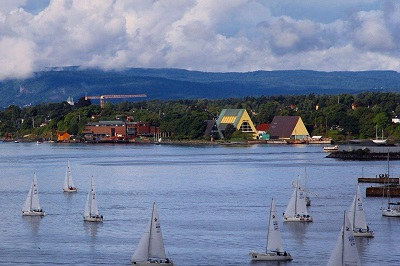

morly旅游网
斯德哥尔摩（Stockholm），是瑞典的首都和第一大城市，瑞典政治、经济、文化、交通中心和主要港口，也是瑞典国家政府、国会以及皇室的官方宫殿都所在地，世界著名的国际大都市。
斯德哥尔摩位于瑞典的东海岸，濒波罗的海，梅拉伦湖入海处，风景秀丽，是著名的旅游胜地。市区分布在14座岛屿和一个半岛上，70余座桥梁将这些岛屿联为一体，因此享有“北方威尼斯”的美誉。斯德哥尔摩市区为大斯德哥尔摩的一部分。斯德哥尔摩城市名称直译过来为木头岛，建于13世纪，1436年起斯德哥尔摩就已经成为瑞典的政治、文化、经济和交通中心。
斯德哥尔摩由于免受战争的破坏而保存良好，现在共有100多座博物馆和名胜，包括历史、民族、自然、美术等各个方面。斯德哥尔摩也是一个高科技的城市，拥有众多大学，工业发达。斯德哥尔摩也是瑞典的金融中心，瑞典主要的银行的总部都在这里。斯德哥尔摩是阿尔弗雷德·诺贝尔的故乡。从1901年开始，每年12月10日诺贝尔逝世纪念日，斯德哥尔摩音乐厅举行隆重仪式，瑞典国王亲自给获诺贝尔奖者授奖，并在市政厅举行晚宴。
斯德哥尔摩由格姆拉斯坦（老城）城堡建筑发展而来。至今保留着许多历史建筑物，景色秀丽。中央车站、大酒店以及其他设施主要集中在格姆拉斯坦以北的诺鲁玛尔姆地区；东部为幽静的高档住宅区埃斯特尔玛尔姆；南部的索德玛尔姆街则是艺术家和年轻人聚集之处；使这里被称作世界最美丽的首都之一。
斯堪森博物馆
斯堪森博物馆建于1891 年，在广大的绿林里，林立着一百多个从瑞典各地迁移过来的农家，教会等建筑物，在此可看到瑞典的传统生活方式和工作情况，可说是一个生活博物馆。这种回到过去的风味，还显露在园内每一处接待解说人员身上的衣着上：白色围裙，素白的衣帽，或者腰间系串钥匙，或者当真在屋外喂食鸡鸭小猪，真仿若置身前个世纪呢。在斯堪森内更有博物馆中的博物馆，最具代表性的就是邮政博物馆、烟草博物馆，收藏品精致的程度，不亚于任一个独立的博物馆。
瑞典王宫
皇宫四壁有许多精美的浮雕，中间是一个很大的场院。南半阙的王宫教堂和国家厅以及北半阙的宴 会厅至今保持着原有陈设，对公众开放。皇宫华丽的大厅里，壁上挂着大幅的历代国王和皇后的肖像画，穹顶饰有磁埋和雕刻和绚丽的绘画。据说大多出自17世纪德国美术家之手。有的室内还陈设着古代的战车兵器、珠宝饰物、金银器皿和手持长矛、全身披挂着铜盔铁甲的中世纪骑士的实体模型。王宫卫队每天中午按古老传统举行隆重的换岗仪式，换岗卫兵身着华丽服饰严肃而庄严地履行着古老传统的换岗程式。
瓦萨沉船博物馆
瓦萨博物馆-Vasamuseet（Vasa Museum）内展示着从海底捞起的十七世纪的战舰——瓦萨号。瓦萨号战舰是由Gustv Adolf二世下令建造的，在当时瑞典是列强吞噬的目标，为了提防邻国的侵袭，Gustv Adolf二世下令建造了四艘战舰，瓦萨号即为其中之一。 1628年春天完工后，八月进行首航，刚出航时天气晴朗一切正常，但航行1300公尺后，却遇上大风浪翻覆一边，又因船的重量过重而加速沉没，这一沉便是333年，到了1961年瑞典当局才下令打捞。航行历史虽然很短，但瑞典人仍视为国宝，因其呈现十七世纪瑞典人造船的技术与艺术，尤其船上的木雕功力至今仍令人激赏。
皇后岛
皇后岛宫属于皇家领地，距市中心15公里，因它的建设受法国凡尔 赛宫的启发，故有“瑞典的凡尔赛”之称，是瑞典第一个被列入世界文化遗产名录的风景点。其内景点包括皇后岛宫、宫廷剧院、中国宫和花园。皇后岛宫是这片皇室领地的核心。剧院（Slottsteatern）的黄金时代是古斯塔夫三世在位时，后来古斯塔夫三世在剧院举行的舞会上遇刺身亡，从此剧院关闭。1922年经整修，按照以前的原样重新演出，现在剧院仍旧举行古典剧目的演出。中国宫(Kina slott)包括有一座宫殿和两座亭子，内外都采用了中国和亚洲的艺术风格。
内容整理至网络，如有侵权，请联系我们！1255394075@qq.com